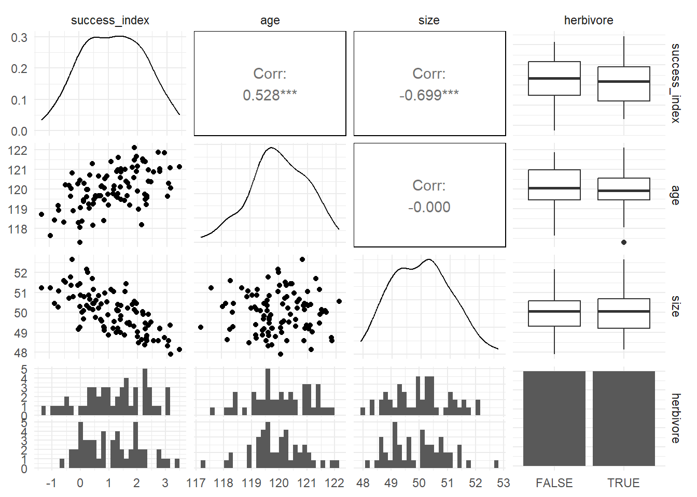
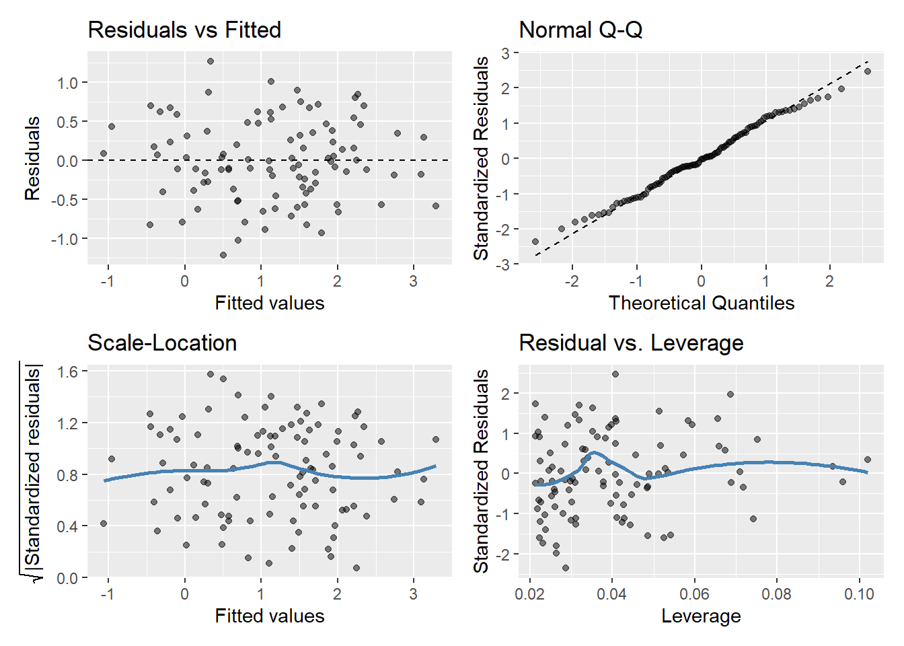
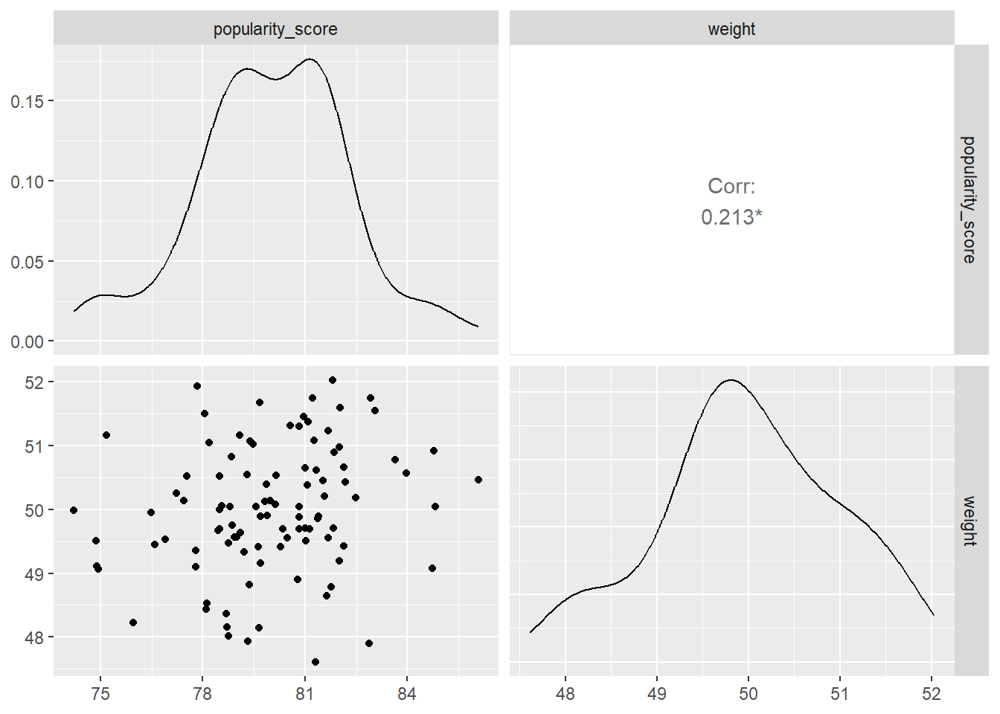
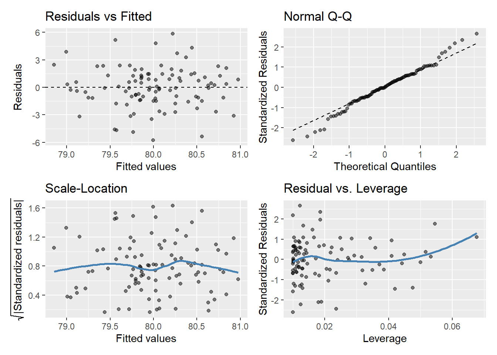

knitr::opts_chunk$set(
warning = F,
message = F
)Week 11 - Exercise
Set environment and load packages
library(readr)
library(dplyr)
library(ggplot2)
library(forcats)
library(GGally)
library(gglm)
theme_set(theme_minimal())Part A
A1.
We use model selection to think carefully about what we want to find out and how we need to structure our modelling process to (with our data in mind) find that out.
For example, we know that there sex differences in ability exert to power against the ground and thereby jump. In order to find that out, we set two hypotheses: H1: sex differences, H0: no sex differences. We measure jump height, and see whether there are differences and use hypothesis testing to (and of course our estimate, mean jump height) to assess whether that our estimate is most likely by chance or not.
If we want to investigate why there are sex differences, we can use an exploratory approach by measuring neuromuscular structures between the sexes to say something about how much different structures affect the jump height. Examples could be rate of force development (how quickly your nervous system uses to assert maximum force), muscle size (big often means more power) and muscle architecture (muscle can be structurally positioned/connected so their moment arms are shorter/longer and thus effect force output). In this case, we can more precisely say Why there are sex differences, i.e., an explanatory approach.
Other important things are the balance between complexity and intepretation. A lot of covariates in the model can make intepretation difficult and may also introduce problems if covariates are correlated. Too few covariates and we won’t be able to explain something as precisely as we might like too.
A2.
The aim of a confirmatory model (hypothesis testing in the example above) is to confirm something we believe to be true. For example, that there are sex differences in ability to jump high.
The aim of an explanatory model is to find out more in detail what cases something and by that something that also predicts well. For example, we can quite precisely predict jump height if we know rate of force development, muscle size and muscle size architecture (together with overall body weight).
A3.
First of all, decide on what you want to find out. Do you want to confirm something, do a hypothesis test. If you want to explain something and maybe predict, do an explanatory model.
Part B
dinosaurs <- read_csv("https://www.math.ntnu.no/emner/ST2304/2024v/Module10/CloneData_2024v.csv")
dinosaurs <- dinosaurs |>
janitor::clean_names() |>
mutate(
herbivore = as_factor(herbivore)
)B1.
This question is explanatory because it gives us an index that tells us how successful the cloning was and other variables that is thought to influence the success of the cloning process. In other words, we are to find out which variables that affect this process.
B2.
Bullet point list:
- What type of response variable do I have? Is it categorical variable, a continuous variable, a TRUE/FALSE categorical variable? We must know this to choose a model.
glimpse(dinosaurs)Rows: 100
Columns: 4
$ success_index <dbl> 1.16, 1.90, 2.37, 1.42, 2.76, 0.16, 1.43, 3.13, 1.71, 0.…
$ age <dbl> 119.77, 121.49, 120.97, 120.58, 121.04, 119.46, 121.02, …
$ size <dbl> 49.20, 50.14, 49.35, 49.64, 49.19, 49.68, 50.35, 47.91, …
$ herbivore <fct> TRUE, FALSE, FALSE, TRUE, TRUE, TRUE, FALSE, FALSE, TRUE…- Investigate explanatory variables, fcts, dbls, lgls, distributions. Is the variables suitable for a linear model for example?
ggpairs(dinosaurs)
- Based on 1 and 2, run a suitable model. Could be binomial, linear, poisson based on what you have in point 1 and 2.
mod <- lm(success_index ~ age + size + herbivore, data = dinosaurs)- Interpret coefficients. Does they make sense, and how big/small is our estimate? We do this to actually say something sensible about our model that have practical significance for the phenomena we are investigating.
mod
Call:
lm(formula = success_index ~ age + size + herbivore, data = dinosaurs)
Coefficients:
(Intercept) age size herbivoreTRUE
-28.77719 0.56106 -0.74735 -0.06654 confint(mod) 2.5 % 97.5 %
(Intercept) -42.3859145 -15.1684651
age 0.4565387 0.6655802
size -0.8518243 -0.6428816
herbivoreTRUE -0.2748023 0.1417158- Check for assumptions for the given model. For a linear model for example: curvature, normally distributed residuals etc.
gglm(mod)
- Check AIC/BIC and R squared for best predictive model/model most likely to be true and variance explained by the explanatory variables.
summary(mod)$r.squared[1] 0.7673128BIC(mod)[1] 173.1699AIC(mod)[1] 160.144B3.
- Type of response variable
The variable is a dbl, a numeric value. Based on that, a linear model could be a good choice. We know also that a binomial model (dead/alive f.ex.) and a poisson model (counts) is not suitable.
- Explanatory variables
We observe that success_index, age and size are normally distributed. We also observe that size is negatively correlated with success_index and that age is positively correlated with success_index, and that on average herbivores have a slightly higher success_index (but very much overlapping). This further emphasizes that a linear model would be suitable.
- Choose model based on 1 and 2.
I choose to run a linear model based on a numeric response variable and normally distributed numeric explanatory variables.
- Interpret coefficients
Age increases the success_index by 0.56 with a one unit increase while size decreases the success_index with 0.75 by a one unit increase. The success_index is slightly lower for herbivores than not. Since the range of success_index is -1.28 to 3.43, an increase of 0.56 and decrease of 0.75 is quite large in my opinion, and one could definitely argue that these estimates tell us that these variables are important for the success_index!
range(dinosaurs$success_index)[1] -1.28 3.43- Check for assumptions
- There is a linear relationship between the variables
- The residuals are normally distributed and have the same variance for any value of x.
- Independence - not quite sure? By design?
- AIC, BIC and R squared
The R-squared is 0.76 indicating that the model has a good fit - explaining 76 % of the variance in success_index.
If I have understood BIC and AIC correctly, they don’t provide any value as absolute measures, it’s them relative to other scores from similar data but different models that matter. Interpreting them are therefore difficult, but I would do so if I for example had run a model with interactions or without one of the explanatory variables.
Part C
dinosaurs_survey <- read_csv("https://www.math.ntnu.no/emner/ST2304/2024v/Module10/DinoData_2024v.csv")
dinosaurs_survey <- dinosaurs_survey |>
janitor::clean_names()C1.
This question is a confirmatory one because it asks us to confirm a belief of the board members that bigger dinosaurs are more popular.
C2-C3.
- Type of response variable
The response variable popularity score is a continuous variable. This opens up for the possibility of a linear model, and also excludes some other models more suited for counts or categorical response (two-level) variables.
glimpse(dinosaurs_survey)Rows: 100
Columns: 2
$ popularity_score <dbl> 79.55404, 79.69135, 79.00022, 78.48848, 76.60677, 82.…
$ weight <dbl> 50.05, 49.16, 49.57, 49.69, 49.45, 51.60, 49.64, 49.9…- Investigate explanatory variable(s)
The response variable is also a continuous variable. It is also normally distributed and seems to be positively but not strongly correlated with popularity score (our response). This also suggests that a linear model would an appropriate choice.
glimpse(dinosaurs_survey)Rows: 100
Columns: 2
$ popularity_score <dbl> 79.55404, 79.69135, 79.00022, 78.48848, 76.60677, 82.…
$ weight <dbl> 50.05, 49.16, 49.57, 49.69, 49.45, 51.60, 49.64, 49.9…ggpairs(dinosaurs_survey)
- Choose a model
mod_2 <- lm(popularity_score ~ weight, data = dinosaurs_survey)
mod_2
Call:
lm(formula = popularity_score ~ weight, data = dinosaurs_survey)
Coefficients:
(Intercept) weight
56.0412 0.4792 confint(mod_2) 2.5 % 97.5 %
(Intercept) 33.95751742 78.1248151
weight 0.03761396 0.9207815- Interpret coefficients
Our model suggests that a one unit increase in weight, increase the popularity score by 0.48. The intercept also tells us that a dinosaur with size = 0 has a popularity score of 56 which does not make sense, but the intercept is not that important in this case so I won’t think more about it. Considering that the popularity score ranges from 0 to 100 but the data collected only ranges from 74 to 86, an increase in 0.48 is quite large in my opinion. This suggest that there is a considerable effect of weight, and it supports the thought of the board members that bigger dinosaurs are more popular.
range(dinosaurs_survey$popularity_score)[1] 74.22772 86.08347- Check for assumptions
Linearity is good, fat tails are present but else quite good, residuals seems normally distributed and there is equal variance for all values of X. Independence is taken care of by design?
gglm(mod_2)
- AIC/BIC and R-squared
R-squared is very small, only explain 4.5 per cent of the variance. BIC and AIC is hard to intepret as they are relative measures.
summary(mod_2)$r.squared[1] 0.04518402AIC(mod_2)[1] 446.7318BIC(mod_2)[1] 454.5473Part D
D1.
To maximize cloning success, I would use old fossils. However, even though the first model indicates that small dinosaurs have higher cloning success, smaller dinosaurs are also more popular. So I had to do some more investigating to say something about the size (cost-benefit relationship between popularity and cloning success). But to give an answer, old fossils would definitely be important.
Part E
E1.
Yes, a way to incorporate a cost-benefit between popularity score and size of the dinosaurs for the two models. I’m not quite sure how I exactly would have run it, would an interaction sufficed?
E2.
I think I chose the right models and were thorough and correct in the process of doing modelling selection and the actual modelling. I’m not quite sure what I got wrong, but please tell me!
E3.
Very cool exercise with not much tips and tricks but just questions to answers. Much more on our own.
E4.
Not in particular.
E5.
I would like feedback on the exercise in general on the modelling selection process. I did it completely without looking at the help documents, so I’m excitied for how it went.